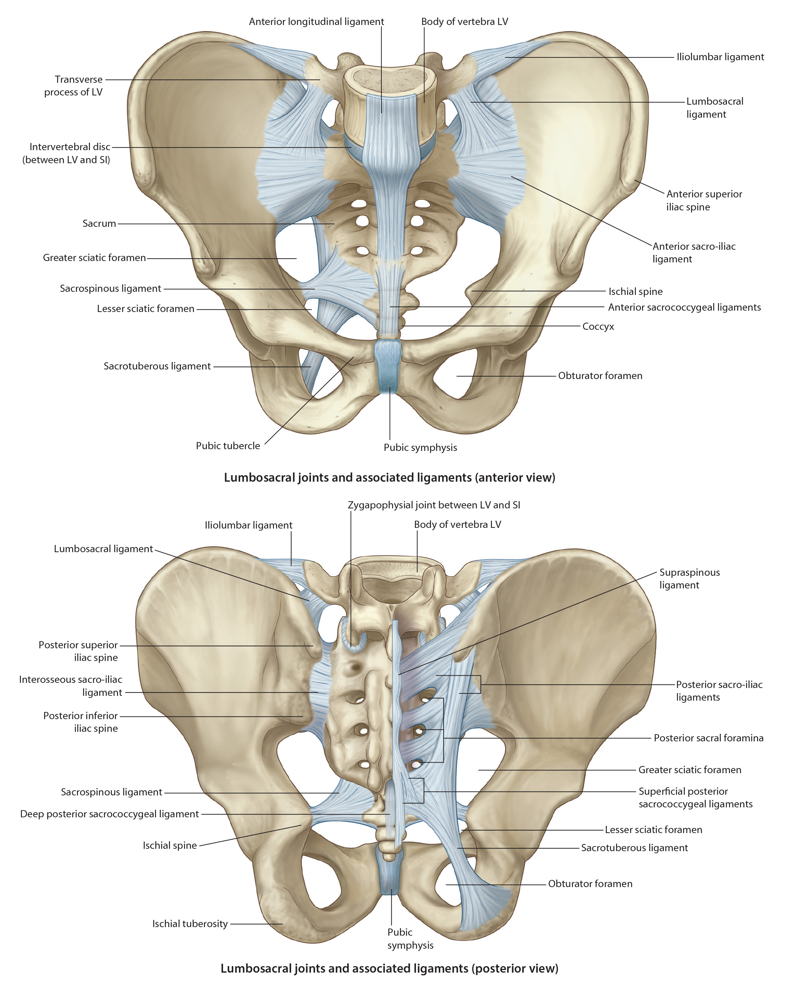

Lab 5 - Module 1 - Hip and Anterior Thigh - Osteology of the Hip and Thigh: Page 3 of 6
Sacroiliac Joint (SI Joint)
|  |
| Tap on image to enlarge |
| Strong joint formed posteriorly by the articulation of the sacrum and ilium. Reinforced by strong ligaments: sacrotuberous ligament, sacrospinous ligament, interosseous sacroiliac ligament, and a less significant iliolumbar ligament.
- attaches to the inferior lateral border of the sacrum and runs inferior to attach to the ischial tuberosity. - attaches to the inferior sacrum and coccyx and runs lateral and slightly inferior to the ischial spine. It forms a separation between the greater and lesser sciatic notches creating pseudo-foramen. - arises from the transverse process of the 5th lumbar vertebrae and attaches anterior to the ilium and the sacrum. - run from the iliac tuberosity to the sacrum (one anterior and one posterior). They are strong ligaments that minimize the amount of motion. |
| These ligaments, particularly the anterior and posterior sacroiliac ligaments, prevent most movement between the sacrum and ilium. The joint surfaces are designed in a way in which stability increases during weight bearing. |
| Identify, the following:
- it is the concavity between the ischial tuberosity and the ischial spine. This notch typically houses nerves and blood vessels entering the pelvic cavity (e.g. Pudendal Nerve). - it is the larger concavity superior to the lesser sciatic notch that is formed by both the ischium and the ilium. This serves as a passage for nerves and blood vessels leaving the pelvic cavity (e.g. Sciatic Nerve) |
| Pubis – forms the anteromedial aspect of the hip bone, contributing to the anterior part of the acetabulum. It is divided into the: flattened body and two rami (superior and inferior). Rami help distribute axial loads to the limbs while upright and to the ischial tuberosities when sitting. The thickened superior border is referred to as the pubic crest which terminates medially on each side to join and form the - Pubic Symphysis
- The joining of the two coxal bones anteriorly. Very strong articulation formed by a fibrocartilagenous disc unites the two surfaces of the pubis anteriorly. The lateral ends of the crest have lateral projections referred to as the pubic tubercles which are important because of the attachment of the inguinal ligaments and muscle attachments. |